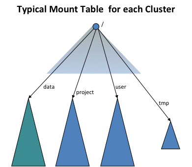

The View File System (ViewFs) provides a way to manage multiple Hadoop file system namespaces (or namespace volumes). It is particularly useful for clusters having multiple namenodes, and hence multiple namespaces, in HDFS Federation. ViewFs is analogous to client side mount tables in some Unix/Linux systems. ViewFs can be used to create personalized namespace views and also per-cluster common views.
This guide is presented in the context of Hadoop systems that have several clusters, each cluster may be federated into multiple namespaces. It also describes how to use ViewFs in federated HDFS to provide a per-cluster global namespace so that applications can operate in a way similar to the pre-federation world.
In the old world prior to HDFS Federation, a cluster has a single namenode which provides a single file system namespace for that cluster. Suppose there are multiple clusters. The file system namespaces of each cluster are completely independent and disjoint. Furthermore, physical storage is NOT shared across clusters (i.e. the Datanodes are not shared across clusters.)
The core-site.xml of each cluster has a configuration property that sets the default file system to the namenode of that cluster:
<property> <name>fs.default.name</name> <value>hdfs://namenodeOfClusterX:port</value> </property>
Such a configuration property allows one to use slash-relative names to resolve paths relative to the cluster namenode. For example, the path /foo/bar is referring to hdfs://namenodeOfClusterX:port/foo/bar using the above configuration.
This configuration property is set on each gateway on the clusters and also on key services of that cluster such the JobTracker and Oozie.
Hence on Cluster X where the core-site.xml is set as above, the typical pathnames are
/foo/bar
hdfs://namenodeOfClusterX:port/foo/bar as before.hdfs://namenodeOfClusterX:port/foo/bar
/foo/bar as it allows the application and its data to be transparently moved to another cluster when needed.hdfs://namenodeOfClusterY:port/foo/bar
distcp hdfs://namenodeClusterY:port/pathSrc hdfs://namenodeClusterZ:port/pathDest
webhdfs://namenodeClusterX:http_port/foo/bar
http://namenodeClusterX:http_port/webhdfs/v1/foo/bar and http://proxyClusterX:http_port/foo/bar
When one is within a cluster, it is recommended to use the pathname of type (1) above instead of a fully qualified URI like (2). Fully qualified URIs are similar to addresses and do not allow the application to move along with its data.
Suppose there are multiple clusters. Each cluster has one or more namenodes. Each namenode has its own namespace. A namenode belongs to one and only one cluster. The namenodes in the same cluster share the physical storage of that cluster. The namespaces across clusters are independent as before.
Operations decide what is stored on each namenode within a cluster based on the storage needs. For example, they may put all the user data (/user/<username>) in one namenode, all the feed-data (/data) in another namenode, all the projects (/projects) in yet another namenode, etc.
In order to provide transparency with the old world, the ViewFs file system (i.e. client-side mount table) is used to create each cluster an independent cluster namespace view, which is similar to the namespace in the old world. The client-side mount tables like the Unix mount tables and they mount the new namespace volumes using the old naming convention. The following figure shows a mount table mounting four namespace volumes /user, /data, /projects, and /tmp:

ViewFs implements the Hadoop file system interface just like HDFS and the local file system. It is a trivial file system in the sense that it only allows linking to other file systems. Because ViewFs implements the Hadoop file system interface, it works transparently Hadoop tools. For example, all the shell commands work with ViewFs as with HDFS and local file system.
In the configuration of each cluster, the default file system is set to the mount table for that cluster as shown below (compare it with the configuration in Single Namenode Clusters).
<property> <name>fs.defaultFS</name> <value>viewfs://clusterX</value> </property>
The authority following the viewfs:// scheme in the URI is the mount table name. It is recommended that the mount table of a cluster should be named by the cluster name. Then Hadoop system will look for a mount table with the name “clusterX” in the Hadoop configuration files. Operations arrange all gateways and service machines to contain the mount tables for ALL clusters such that, for each cluster, the default file system is set to the ViewFs mount table for that cluster as described above.
The mount points of a mount table are specified in the standard Hadoop configuration files. All the mount table config entries for viewfs are prefixed by fs.viewfs.mounttable.. The mount points that are linking other filesystems are specified using link tags. The recommendation is to have mount points name same as in the linked filesystem target locations. For all namespaces that are not configured in the mount table, we can have them fallback to a default filesystem via linkFallback.
In the below mount table configuration, namespace /data is linked to the filesystem hdfs://nn1-clusterx.example.com:8020/data, /project is linked to the filesystem hdfs://nn2-clusterx.example.com:8020/project. All namespaces that are not configured in the mount table, like /logs are linked to the filesystem hdfs://nn5-clusterx.example.com:8020/home.
<configuration>
<property>
<name>fs.viewfs.mounttable.clusterX.link./data</name>
<value>hdfs://nn1-clusterx.example.com:8020/data</value>
</property>
<property>
<name>fs.viewfs.mounttable.clusterX.link./project</name>
<value>hdfs://nn2-clusterx.example.com:8020/project</value>
</property>
<property>
<name>fs.viewfs.mounttable.clusterX.link./user</name>
<value>hdfs://nn3-clusterx.example.com:8020/user</value>
</property>
<property>
<name>fs.viewfs.mounttable.clusterX.link./tmp</name>
<value>hdfs://nn4-clusterx.example.com:8020/tmp</value>
</property>
<property>
<name>fs.viewfs.mounttable.clusterX.linkFallback</name>
<value>hdfs://nn5-clusterx.example.com:8020/home</value>
</property>
</configuration>
Alternatively we can have the mount table’s root merged with the root of another filesystem via linkMergeSlash. In the below mount table configuration, clusterY’s root is merged with the root filesystem at hdfs://nn1-clustery.example.com:8020.
<configuration>
<property>
<name>fs.viewfs.mounttable.clusterY.linkMergeSlash</name>
<value>hdfs://nn1-clustery.example.com:8020/</value>
</property>
</configuration>
Hence on Cluster X, where the core-site.xml is set to make the default fs to use the mount table of that cluster, the typical pathnames are
/foo/bar
viewfs://clusterX/foo/bar. If such pathname is used in the old non-federated world, then the transition to federation world is transparent.viewfs://clusterX/foo/bar
/foo/bar as it allows the application and its data to be transparently moved to another cluster when needed.viewfs://clusterY/foo/bar
distcp viewfs://clusterY/pathSrc viewfs://clusterZ/pathDest
viewfs://clusterX-webhdfs/foo/bar
http://namenodeClusterX:http_port/webhdfs/v1/foo/bar and http://proxyClusterX:http_port/foo/bar
When one is within a cluster, it is recommended to use the pathname of type (1) above instead of a fully qualified URI like (2). Further, applications should not use the knowledge of the mount points and use a path like hdfs://namenodeContainingUserDirs:port/joe/foo/bar to refer to a file in a particular namenode. One should use /user/joe/foo/bar instead.
Recall that one cannot rename files or directories across namenodes or clusters in the old world. The same is true in the new world but with an additional twist. For example, in the old world one can perform the commend below.
rename /user/joe/myStuff /data/foo/bar
This will NOT work in the new world if /user and /data are actually stored on different namenodes within a cluster.
HDFS and other distributed filesystems provide data resilience via some sort of redundancy such as block replication or more sophisticated distributed encoding. However, modern setups may be comprised of multiple Hadoop clusters, enterprise filers, hosted on and off premise. Nfly mount points make it possible for a single logical file to be synchronously replicated by multiple filesystems. It’s designed for a relatively small files up to a gigabyte. In general it’s a function of a single core/single network link performance since the logic resides in a single client JVM using ViewFs such as FsShell or a MapReduce task.
Consider the following example to understand the basic configuration of Nfly. Suppose we want to keep the directory ads replicated on three filesystems represented by URIs: uri1, uri2 and uri3.
<property>
<name>fs.viewfs.mounttable.global.linkNfly../ads</name>
<value>uri1,uri2,uri3</value>
</property>
Note 2 consecutive .. in the property name. They arise because of empty settings for advanced tweaking of the mount point which we will show in subsequent sections. The property value is a comma-separated list of URIs.
URIs may point to different clusters in different regions hdfs://datacenter-east/ads, s3a://models-us-west/ads, hdfs://datacenter-west/ads or in the simplest case to different directories under the same filesystem, e.g., file:/tmp/ads1, file:/tmp/ads2, file:/tmp/ads3
All modifications performed under the global path viewfs://global/ads are propagated to all destination URIs if the underlying system is available.
For instance if we create a file via hadoop shell
hadoop fs -touchz viewfs://global/ads/z1
We will find it via local filesystem in the latter configuration
ls -al /tmp/ads*/z1 -rw-r--r-- 1 user wheel 0 Mar 11 12:17 /tmp/ads1/z1 -rw-r--r-- 1 user wheel 0 Mar 11 12:17 /tmp/ads2/z1 -rw-r--r-- 1 user wheel 0 Mar 11 12:17 /tmp/ads3/z1
A read from the global path is processed by the first filesystem that does not result in an exception. The order in which filesystems are accessed depends on whether they are available at this moment or and whether a topological order exists.
Mount points linkNfly can be further configured using parameters passed as a comma-separated list of key=value pairs. Following parameters are currently supported.
minReplication=int determines the minimum number of destinations that have to process a write modification without exceptions, if below nfly write is failed. It is an configuration error to have minReplication higher than the number of target URIs. The default is 2.
If minReplication is lower than the number of target URIs we may have some target URIs without latest writes. It can be compensated by employing more expensive read operations controlled by the following settings
readMostRecent=boolean if set to true causes Nfly client to check the path under all target URIs instead of just the first one based on the topology order. Among all available at the moment the one with the most recent modification time is processed.
repairOnRead=boolean if set to true causes Nfly to copy most recent replica to stale targets such that subsequent reads can be done cheaply again from the closest replica.
Nfly seeks to satisfy reads from the “closest” target URI.
To this end, Nfly extends the notion of Rack Awareness to the authorities of target URIs.
Nfly applies NetworkTopology to resolve authorities of the URIs. Most commonly a script based mapping is used in a heterogeneous setup. We could have a script providing the following topology mapping
| URI | Topology |
|---|---|
hdfs://datacenter-east/ads |
/us-east/onpremise-hdfs |
s3a://models-us-west/ads |
/us-west/aws |
hdfs://datacenter-west/ads |
/us-west/onpremise-hdfs |
If a target URI does not have the authority part as in file:/ Nfly injects client’s local node name.
<property>
<name>fs.viewfs.mounttable.global.linkNfly.minReplication=3,readMostRecent=true,repairOnRead=false./ads</name>
<value>hdfs://datacenter-east/ads,hdfs://datacenter-west/ads,s3a://models-us-west/ads,file:/tmp/ads</value>
</property>
FileSystem fs = FileSystem.get("viewfs://global/", ...);
FSDataOutputStream out = fs.create("viewfs://global/ads/f1");
out.write(...);
out.close();
The code above would result in the following execution.
create an invisible file _nfly_tmp_f1 under each target URI i.e., hdfs://datacenter-east/ads/_nfly_tmp_f1, hdfs://datacenter-west/ads/_nfly_tmp_f1, etc. This is done by calling create on underlying filesystems and returns a FSDataOutputStream object out that wraps all four output streams.
Thus each subsequent write on out can be forwarded to each wrapped stream.
On out.close all streams are closed, and the files are renamed from _nfly_tmp_f1 to f1. All files receive the same modification time corresponding to the client system time as of beginning of this step.
If at least minReplication destinations have gone through steps 1-3 without failures Nfly considers the transaction logically committed; Otherwise it tries to clean up the temporary files in a best-effort attempt.
Note that because 4 is a best-effort step and the client JVM could crash and never resume its work, it’s a good idea to provision some sort of cron job to purge such _nfly_tmp files.
As I move from non-federated world to the federated world, I will have to keep track of namenodes for different volumes; how do I do that?
No, you won’t. See the examples above – you are either using a relative name and taking advantage of the default file system, or changing your path from hdfs://namenodeCLusterX/foo/bar to viewfs://clusterX/foo/bar.
What happens of Operations move some files from one namenode to another namenode within a cluster?
Operations may move files from one namenode to another in order to deal with storage capacity issues. They will do this in a way to avoid applications from breaking. Let’s take some examples.
Example 1: /user and /data were on one namenode and later they need to be on separate namenodes to deal with capacity issues. Indeed, operations would have created separate mount points for /user and /data. Prior to the change the mounts for /user and /data would have pointed to the same namenode, say namenodeContainingUserAndData. Operations will update the mount tables so that the mount points are changed to namenodeContaingUser and namenodeContainingData, respectively.
Example 2: All projects were fitted on one namenode and but later they need two or more namenodes. ViewFs allows mounts like /project/foo and /project/bar. This allows mount tables to be updated to point to the corresponding namenode.
Is the mount table in each core-site.xml or in a separate file of its own?
The plan is to keep the mount tables in separate files and have the core-site.xml xincluding it. While one can keep these files on each machine locally, it is better to use HTTP to access it from a central location.
Should the configuration have the mount table definitions for only one cluster or all clusters?
The configuration should have the mount definitions for all clusters since one needs to have access to data in other clusters such as with distcp.
When is the mount table actually read given that Operations may change a mount table over time?
The mount table is read when the job is submitted to the cluster. The XInclude in core-site.xml is expanded at job submission time. This means that if the mount table are changed then the jobs need to be resubmitted. Due to this reason, we want to implement merge-mount which will greatly reduce the need to change mount tables. Further, we would like to read the mount tables via another mechanism that is initialized at job start time in the future.
Will JobTracker (or Yarn’s Resource Manager) itself use the ViewFs?
No, it does not need to. Neither does the NodeManager.
Does ViewFs allow only mounts at the top level?
No; it is more general. For example, one can mount /user/joe and /user/jane. In this case, an internal read-only directory is created for /user in the mount table. All operations on /user are valid except that /user is read-only.
An application works across the clusters and needs to persistently store file paths. Which paths should it store?
You should store viewfs://cluster/path type path names, the same as it uses when running applications. This insulates you from movement of data within namenodes inside a cluster as long as operations do the moves in a transparent fashion. It does not insulate you if data gets moved from one cluster to another; the older (pre-federation) world did not protect you form such data movements across clusters anyway.
What about delegation tokens?
Delegation tokens for the cluster to which you are submitting the job (including all mounted volumes for that cluster’s mount table), and for input and output paths to your map-reduce job (including all volumes mounted via mount tables for the specified input and output paths) are all handled automatically. In addition, there is a way to add additional delegation tokens to the base cluster configuration for special circumstances.
Please refer to the View File System Overload Scheme Guide
The view file system mount points were a Key-Value based mapping system. It is not friendly for user cases which mapping config could be abstracted to rules. E.g. Users want to provide a GCS bucket per user and there might be thousands of users in total. The old key-value based approach won’t work well for several reasons:
The mount table is used by FileSystem clients. There’s a cost to spread the config to all clients and we should avoid it if possible. The View File System Overload Scheme Guide could help the distribution by central mount table management. But the mount table still have to be updated on every change. The change could be greatly avoided if provide a rule-based mount table.
The client have to understand all the KVs in the mount table. This is not ideal when the mountable grows to thousands of items. E.g. thousands of file systems might be initialized even users only need one. And the config itself will become bloated at scale.
In the key-value based mount table, view file system treats every mount point as a partition. There’s several file system APIs which will lead to operation on all partitions. E.g. there’s an HDFS cluster with multiple mount. Users want to run “hadoop fs -put file viewfs://hdfs.namenode.apache.org/tmp/” cmd to copy data from local disk to our HDFS cluster. The cmd will trigger ViewFileSystem to call setVerifyChecksum() method which will initialize the file system for every mount point. For a regex rule based mount table entry, we couldn’t know what’s corresponding path until parsing. So the regex based mount table entry will be ignored on such cases. The file system (ChRootedFileSystem) will be created upon accessing. But the underlying file system will be cached by inner cache of ViewFileSystem.
<property>
<name>fs.viewfs.rename.strategy</name>
<value>SAME_FILESYSTEM_ACROSS_MOUNTPOINT</value>
</property>
Here’s an example of base regex mount point config. ${username} is the named capture group in Java Regex.
<property>
<name>fs.viewfs.mounttable.hadoop-nn.linkRegx./^(?<username>\\w+)</name>
<value>gs://${username}.hadoop.apache.org/</value>
</property>
Parsing example.
viewfs://hadoop-nn/user1/dir1 => gs://user1.hadoop.apache.org/dir1 viewfs://hadoop-nn/user2 => gs://user2.hadoop.apache.org/
The src/key’s format are
fs.viewfs.mounttable.${VIEWNAME}.linkRegx.${REGEX_STR}
Interceptor is one mechanism introduced to modify source or target in the resolution process. It’s optional and could be used to satisfy user cases such as replace specific character or replace some word. Interceptor will only work for regex mount point. RegexMountPointResolvedDstPathReplaceInterceptor is the only build-in interceptor now.
Here’s an example regex mount point entry with RegexMountPointResolvedDstPathReplaceInterceptor set.
<property>
<name>fs.viewfs.mounttable.hadoop-nn.linkRegx.replaceresolveddstpath:_:-#./^(?<username>\\w+)</name>
<value>gs://${username}.hadoop.apache.org/</value>
</property>
The replaceresolveddstpath:_:- is an interceptor setting. “replaceresolveddstpath” is the interceptor type, “_” is the string to replace and “-” is the string after replace.
Parsing example.
viewfs://hadoop-nn/user_ad/dir1 => gs://user-ad.hadoop.apache.org/dir1 viewfs://hadoop-nn/user_ad_click => gs://user-ad-click.hadoop.apache.org/
The src/key’s format are
fs.viewfs.mounttable.${VIEWNAME}.linkRegx.${REGEX_STR}
fs.viewfs.mounttable.${VIEWNAME}.linkRegx.${interceptorSettings}#.${srcRegex}
Generally, users do not have to define mount tables or the core-site.xml to use the mount table. This is done by operations and the correct configuration is set on the right gateway machines as is done for core-site.xml today.
The mount tables can be described in core-site.xml but it is better to use indirection in core-site.xml to reference a separate configuration file, say mountTable.xml. Add the following configuration element to core-site.xml for referencing mountTable.xml:
<configuration xmlns:xi="http://www.w3.org/2001/XInclude"> <xi:include href="mountTable.xml" /> </configuration>
In the file mountTable.xml, there is a definition of the mount table “clusterX” for the hypothetical cluster that is a federation of the three namespace volumes managed by the three namenodes
Here /home and /tmp are in the namespace managed by namenode nn1-clusterx.example.com:8020, and projects /foo and /bar are hosted on the other namenodes of the federated cluster. The home directory base path is set to /home so that each user can access its home directory using the getHomeDirectory() method defined in FileSystem/FileContext.
<configuration>
<property>
<name>fs.viewfs.mounttable.clusterX.homedir</name>
<value>/home</value>
</property>
<property>
<name>fs.viewfs.mounttable.clusterX.link./home</name>
<value>hdfs://nn1-clusterx.example.com:8020/home</value>
</property>
<property>
<name>fs.viewfs.mounttable.clusterX.link./tmp</name>
<value>hdfs://nn1-clusterx.example.com:8020/tmp</value>
</property>
<property>
<name>fs.viewfs.mounttable.clusterX.link./projects/foo</name>
<value>hdfs://nn2-clusterx.example.com:8020/projects/foo</value>
</property>
<property>
<name>fs.viewfs.mounttable.clusterX.link./projects/bar</name>
<value>hdfs://nn3-clusterx.example.com:8020/projects/bar</value>
</property>
</configuration>